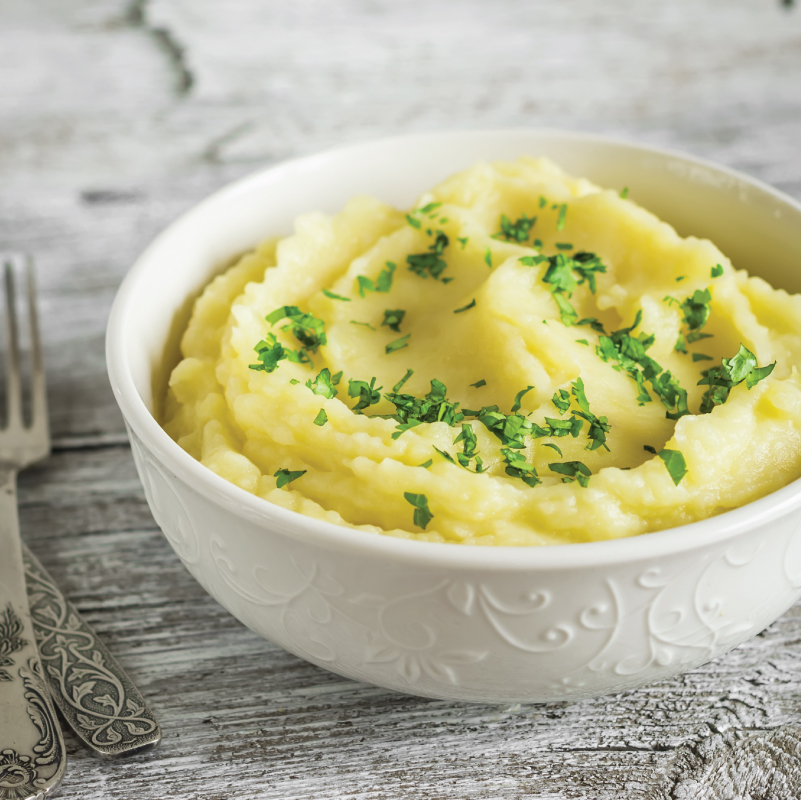

Pure de papa

The pure de papa is the normal mashed potatoes but this site is centered on latin recipes :D
The pure de papas is a normal mashed potatoes recipee but with some latino twist on it
Ingredients
- potatoes
- Butter
- milk
- salt
- Cheese
- Pepper
- milk cream
- Peel and cook the potatoes
- Once they're cooked you can mash them
- Once they're mashed add some butter and mix
- Now add some milk to it so it gets softer
- Add the salt and pepper
- Now for a little extra flavour and texture add some milk cream
- and that's it now you have your mashed potatoes